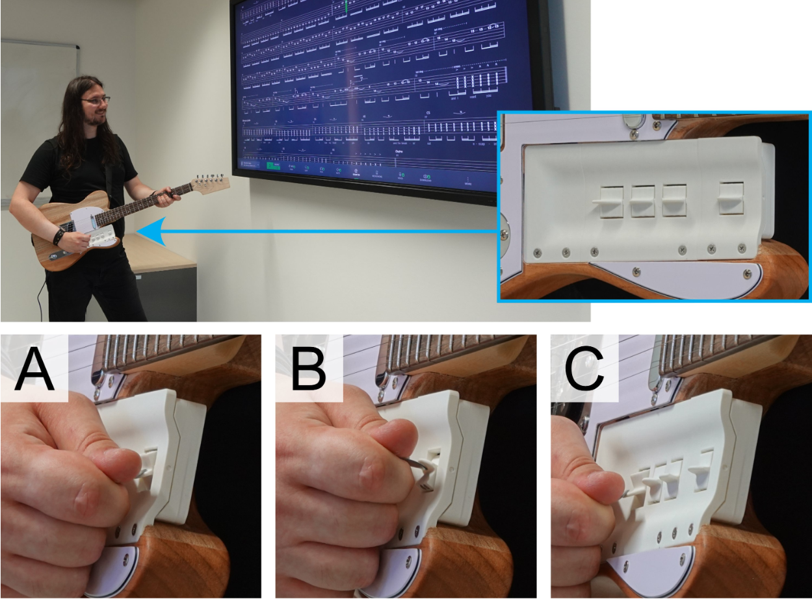

Demonstration of GuitarFins: Triggering Input with a Guitar Pick

(opens in new tab)
Venue. UIST-Adjunct (2026)
Materials.
DOI(opens in new tab)
PDF(opens in new tab)
Abstract. Controlling digital interfaces (e.g., navigating in a tablature interface via mouse and keyboard) or configuring physical audio equipment (e.g., on the floor) can be challenging with a guitar strapped on, as it impedes physical access to the input devices. In addition, guitarists typically use a guitar pick, which can be a hindrance when trying to interact with physical input components that are not designed around the fact that the index finger and thumb are occupied by the pick. We demonstrate GuitarFins, which turn the guitar pick from a hindrance into an opportunity. GuitarFins are physical input components that are integrated into the guitar corpus and designed to be operated with a guitar pick, thereby utilizing the skill and dexterity of guitarists with a pick.
Link to this page: